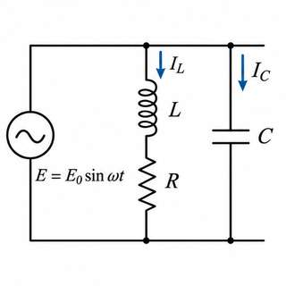
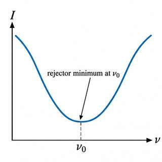
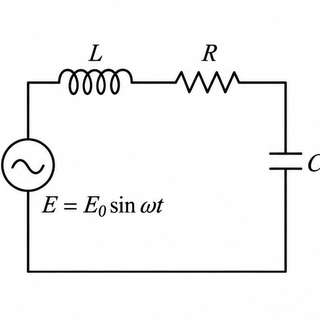
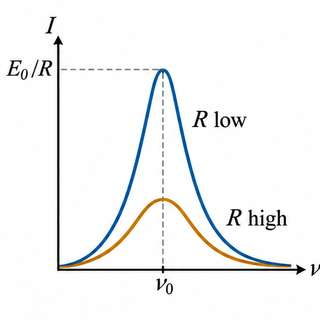
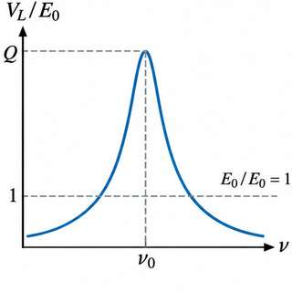
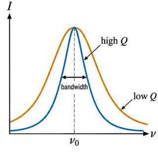
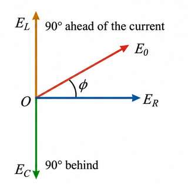
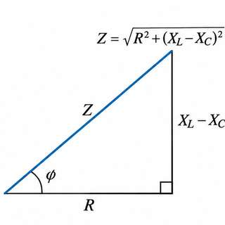

Study notes: Section 5: series LCR and parallel resonance (Murugeshan 13.2(vi), 13.3, 13.4)
13.2 (vi), 13.3 and 13.4 Parallel and series resonance
Before you start
- The impedance and phase of R, L and C in series (Section 4 of these notes).
- Complex numbers, the conjugate and the modulus (pre-math B1, B3).
1. Parallel resonant circuit (§13.2(vi))
Take an inductance $L$ and a capacitance $C$ in parallel across an alternating emf $E = E_0\sin\omega t$. The current in $L$ lags the emf by $\pi/2$, so $I_L = (E_0/\omega L)\sin(\omega t-\pi/2)$. The current in $C$ leads the emf by $\pi/2$, so $I_C = E_0/(1/\omega C)\sin(\omega t+\pi/2)$ (Fig. 13.14). The total current is
If at a frequency $\nu_0$ we have $\omega C = 1/\omega L$, the current is zero. The circuit then offers an infinite impedance: it is a parallel resonant circuit. Its resonant frequency is


2. Series LCR circuit: first method (§13.3)
Let $E=E_0\sin\omega t$ be applied to $R$, $L$ and $C$ in series (Fig. 13.16). Let $I$ be the current and $Q$ the charge on $C$. The emf equation is $L\,dI/dt + RI + Q/C = E_0\sin\omega t$. Differentiating with respect to $t$ gives
Try the solution $I = I_0\sin(\omega t-\phi)$, with $I_0$ and $\phi$ constants. Substituting $I$, $dI/dt$ and $d^2I/dt^2$ and equating the coefficients of $\sin(\omega t-\phi)$ and $\cos(\omega t-\phi)$ gives
Dividing and squaring-and-adding give
The quantity $\sqrt{R^2+(\omega L-1/\omega C)^2}$ is the impedance $Z$, which is $\sqrt{R^2+(X_L-X_C)^2}$. The current lags the emf if $X_L>X_C$, leads it if $X_L\lt X_C$, and is in phase when $X_L=X_C$.
3. Series resonance
The impedance is least when $\omega L = 1/\omega C$, so $Z=R$ and the current is largest. This frequency is the resonant frequency $\nu_0 = 1/(2\pi\sqrt{LC})$. The largest current is $I_0=E_0/R$. The sharpness of the peak depends on $R$: small $R$ gives a sharp peak (Figs. 13.17, 13.18). The circuit is an acceptor circuit, because it admits the current of its own frequency most readily.


4. Voltage magnification and the Q-factor
At resonance $I_0 = E_0/R$, and the voltage across $L$ is $V_L = X_L I_0 = (\omega_0 L/R)E_0 = QE_0$, where $Q = \omega_0 L/R$ is the quality factor. Thus the voltage across $L$ (and across $C$) is $Q$ times the applied voltage. This is the voltage magnification. It does not increase the power, because the reactive power is wattless. A larger $Q$ gives a sharper, narrower resonance curve (Fig. 13.18). The sharpness is measured by the bandwidth.



5. Vector diagram
In a series circuit the current is the same through $R$, $L$ and $C$. The drop $E_R = I_0R$ is in phase with the current, $E_L = \omega LI_0$ is $90^\circ$ ahead of it, and $E_C = I_0/\omega C$ is $90^\circ$ behind it (Fig. 13.19). The resultant of $E_L$ and $E_C$ is $E_L - E_C$, and $E_0^2 = E_R^2 + (E_L-E_C)^2$.
6. Series LCR circuit: second method (complex impedance)
Write $Z = Z_R + Z_L + Z_C = R + j(\omega L - 1/\omega C)$ (Fig. 13.21). With $E=E_0e^{j\omega t}$,
The actual current is the imaginary part of the complex current. The current lags the voltage by $\phi$.
7. Parallel resonant circuit: the rejector (§13.4)
Let $C$ be in parallel with the series combination of $R$ and $L$, across $E = E_0 e^{j\omega t}$ (Fig. 13.22). The impedance of the $L$ branch is $Z_1 = R + j\omega L$ and of the $C$ branch is $Z_2 = 1/(j\omega C)$. Their parallel combination has
The admittance is least, and so the impedance greatest, at $\omega_0 = \sqrt{\frac{1}{LC} - \frac{R^2}{L^2}}$. If $R$ is small, $\nu_0 = 1/(2\pi\sqrt{LC})$. At this frequency the impedance is $Z = L/(RC)$ and the current is least. A parallel circuit at resonance is a rejector: it blocks the current of its natural frequency (Fig. 13.23). In a parallel circuit, resonance gives maximum impedance; in a series circuit, minimum.

8. Worked examples
§13.3, Example 1 (printed p. 344). $R=50+2=52\ \Omega$, $L=0.3$ H, $C=40\ \mu$F, $\omega=100\pi$, $E_{rms}=200$ V. $X_L=94.2\ \Omega$, $X_C=79.6\ \Omega$, $Z=53.97\ \Omega$, $I_{rms}=3.71$ A. $\tan\phi = 0.28$, $\phi\approx15^\circ39'$, $\cos\phi=0.964$, apparent power $742$ VA, true power $716$ W.
§13.3, Example 2 (printed p. 344). For resonance with $L=5$ H and $\omega=100\pi$, $C=2\ \mu$F. The current at resonance is $I_{rms}=100/100=1.0$ A. The p.d. across $R$ is 100 V, across $L$ 1570 V, and across $C$ 1570 V, which are equal and opposite in phase.
§13.4, Example 1 (printed p. 347). $L=2$ mH, $R=15\ \Omega$, $C=0.001\ \mu$F. The resonant frequency is $\nu_0 = 112\,590$ Hz (or $112\,596$ Hz by the approximation). The peak make-up current is $E_0CR/L = 15\times10^{-6}$ A.